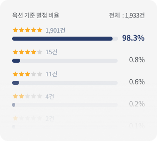
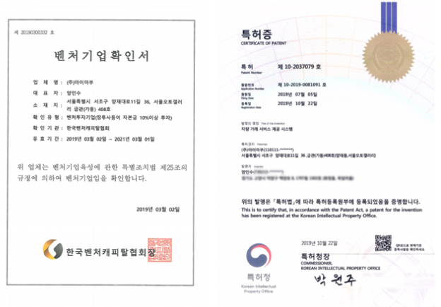

마이마부구매동행 서비스 알아보기
구매동행서비스란?
- 차량의 과거를 조회하고
- 차량의 문제를 조사하고
- 매물의 조건을 확인하고
- 차량의 상태를 검사하는
- 마이마부만의 차별화된
- 차량 검증 서비스입니다.
- 서비스는 어떻게 제공되나요?
- 4단계로 세분화하여 꼼꼼하게 차량을 조회하고
확인하여 검사한 후 제공합니다.
STEP 1
- 전산조회
- 차량정보를 2단계로 구분하여
전산 상으로 조회합니다.
- 1. 차량 기본스펙 조회
- 구매하고자 하는 차종이 맞는지
확인합니다.
- 2. 차량 사용이력 조회
- 스펙조회로 구매차종이 확인되면 해당 차종의 사고이력,특수용도 이력, 소유자 변경이력 등 사용이력을 조회합니다.
STEP 2
- 상세조사
- 전산조회가 완료되면
2단계 상세 조사를 시작합니다.
STEP 3
- 거래확인
- 상세조사가 완료되면
3단계 거래확인이 시작됩니다.
STEP 4
- 차량검사
- 거래확인이 완료되면
4단계 차량검사가 시작됩니다.
- 누가 검사하나요?
-
마이마부는 100% 정직원으로 꾸려진 전문팀이
단계별로 분업하여 최소 2명의 전담 매니저가
차량을 조사/검사합니다.
- 조사 전담 매니저
- 가격 협상 확인 등 상세조사 및 거래확인 담당
- 검사 전담 매니저
- 사고유무, 소모품상태 등 차량검사 담당
- 전문가의
검사영상을 한번 보실까요?
- 검사결과가 잘못되었다면?
-
마이마부 동행서비스는 혹시 발생할 수 있는 잘못된
차량검사를 보상하기 위해
현대해상보험에 가입되어 있습니다.
- 보상 조건
-
- 검사 후 00일 / 주행거리 123km까지 보상
- 출고일 기준 0년 이상, 주행거리 00km는 보상에서 제외
- 환불조건은 어떻게 되나요?
- 각 단계별 사용금액을 정산 후 환불됩니다.
- 1단계 전산조회 사용 후
- 전산조회 사용 시 마이마부 시스템 이용료
5천원 차감 후 환불
- 2단계 상세조사 착수 후
- 조사담당 매니저의 인건비 0만원 차감 후
환불
- 4단계 차량검사 일정확정 후
-
- 차량검사 일정확정 후 24시간 미만이 되면 환불 불가
- 24시간 이상 남은 경우 조사담당 매니저 인건비 0만원 차감 후 환불
- 많은 고객님들이
구매동행서비스에 만족하고 계십니다. - 구매동행시즌1의 고객만족도를 확인해보세요.
- 
- 서비스가 강화된 구매동행시즌2 에서는 더 많은
고객이 만족할 수 있도록 서비스를 더더욱 꼼꼼하게 확대하였습니다.
- 잠깐!
이것 뿐만이 아닙니다. - 마이마부는 검사 전용 스튜디오를
보유하고 있습니다.
- 마이마부의
특허받은 서비스를 이용하세요!

- 구매동행 서비스는?
-
차량의 과거를 조회하고 차량의 문제를 조사하고 매물의 조건을 확인하고
차량의 상태를 검사하는 마이마부만의
차별화된 차량 검증 서비스 입니다.
- 서비스는 어떻게 제공 되나요?
-
서비스는 4단계로 세분화하여 꼼꼼하게 차량을 조회
하고 조사하고 확인하고 검사한 후 제공됩니다.
-
- 1단계 전산조회
- 1단계 전산조회는 2단계를 구분하여 차량의정보를 전상 상으로 조회합니다.
- 1단계
- 차량기본 스펙 조회 > 구매하고자 하는 차종이 맞는지 확인합니다.
- 2단계
- 보험개발원 보험이력조회 > 1단계로 구매차종이 확인되었다 면 2단계로 해당차종의 사고이력, 특수용도이력, 소유자 변경이력 등 해당차량의 사용이력을 조회합니다.
-
- 2단계 상세조사
- 1단계 전산조회가 완료되면 2단계 상세조사가 시작됩니다.
- 2단계
- 상세 조사는 차량의 압류, 저당, 구조변경, 영업이력, 부활유무 및 리콜 처리 내역 등을 고객매니저가 각종 채널조사를 통해 조사합니다.
-
- 3단계 거래확인
- 2단계 상세조사가 완료되면 3단계 거래확인이 시작됩니다.
- 3단계
- 거래확인은 허위매물 여부, 구매가능 여부 리프트 사용여부, 수수료 또는 매도비 존재 여부 및 가격 협상이 가능한지를 확인합니다.
-
- 4단계 차량검사
- 2단계 상세조사가 완료되면 3단계 거래확인이 시작됩니다.
- 4단계
- 차량의 검사는 검사 버전별로 검사항목의 차이가 있으나 기본적으로 차량의 사고유무, 외판상태, 실내상태, 등 전반적인 차량의 상태를 검사합니다.
- 누가 검사 하나요?
- 마이마부는 100% 정직원으로 전문팀이 단계별로 분업화하여 최소2명의 전담매니저가 차량을 조사하고 검사합니다.
- 조사 전담 매니저
- 가격 협상 확인 등 상세 조사 및 거래확인 담당
- 검사 전담 매니저
- 사고유무, 소모품상태 등 차량검사 담당
검사하는 영상 한번 보실까요?
검사결과가 잘못되었다면?
- 마이마부 구매동행서비스는 혹시 발생할수있는 잘못된 차량검사를 보상하기 위해 현대해상보험에 가입되어 있습니다.
- 보상조건은 검사 후 00일까지 주행거리 ookm 까지 보상해드립니다. 단, 출고일기준 0년 이상, 주행거리00km는 보상에서 제외됩니다.
환불 조건은 어떻게 될까요?
각 단계별 사용 금액을 정산 후 환불됩니다.
- 1단계 전산조회 사용 후
- 차량기본 스펙 조회 > 구매하고자 하는 차종이 맞는지 확인합니다.
- 2단계 상세조사 착수 후
- 2단계 상세조사 착수 후 조사담당 매니저의 인건비 0 만원 차감된 후 환불됩니다.
- 4단계 차량검사 일정 확정 후
- 차량검사 일정 확정 후 24 시간 미만이 되면 환불이 불가하며 24시간 이상 남은 경우 조사담당 매니저의 인건비 0 만원 차감된 후 환불됩니다.
고객 만족도는 어떨까요?
- 구매동행시즌1 별점 비율 전체: 0,000건
 1901건
98.3%
1901건
98.3%
 15건
0.8%
15건
0.8%
 11건
0.6%
11건
0.6%
 4건
0.2%
4건
0.2%
2건 0.1%
서비스가 강화된 구매동행시즌2에서는 더 많은 고객이 만족 할 수 있도록 서비스를 더 꼼꼼하게 확대하였습니다.
마이마부 고객님이 인터뷰해 주셨습니다.
- 잠깐! 이것이 전부가 아닙니다.
- 마이마부는 검사 전용 스튜디오를 보유하고 있습니다.
- 서울 양재 스튜디오
- 소개글은 차후 추가될 예정입니다 5줄 내외로 추가된다고 생각하시고 작업 부탁드립니다 이미지는 작업 기간 중 확보 가능하면 전달 드리겠습니다 작업기간 지난 후 확보되면 내부에서 변경하도록 하겠습니다 그럴 경우 대체 이미지 적용해 주세요

- 부산 스튜디오
- 소개글은 차후 추가될 예정입니다 5줄 내외로 추가된다고 생각하시고 작업 부탁드립니다 이미지는 작업 기간 중 확보 가능하면 전달 드리겠습니다 작업기간 지난 후 확보되면 내부에서 변경하도록 하겠습니다 그럴 경우 대체 이미지 적용해 주세요

그리고, 마이마부 서비스는 특허도 있습니다.